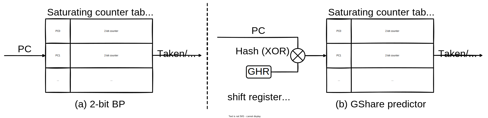
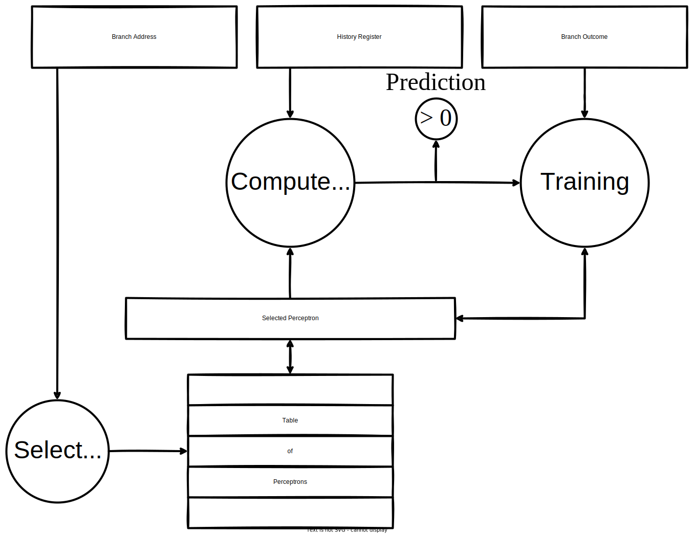

Computer Architecture 2025fall Project 2
By Prof. Jie Zhang
Due: 11:59:59 pm, November 5, 2025
In this project, we will explore the design of a branch predictor (BP) in a computer system. Specifically, we will introduce how to add a branch predictor module in the configuration script. We also provide a tutorial to add a new branch predictor in gem5. You will evaluate how different types of branch predictors can impact the system performance. Further, you will try to implement various BPs by yourselves. Specifically, you will first implement a simple BP following the tutorial. Then, you are required to read a paper that first describes the perceptron BP. You need to summarize the paper and implement the perceptron BP. Next, you are required to compare your BP’s performance with other BPs that gem5 has provided.
Whenever you face trouble or problems with this project, please refer contact TAs by WeChat or e-mail. All the following information has been verified on Ubuntu 20.04.1 with Linux Kernel 5.15.0 and Ubuntu 22.04.2 LTS with Linux Kernel 5.19.0.
Part 1: Add Branch Predictor in the Configuration Script
In this part, we will extend our configuration script to enable the modification of CPU's branch predictor. Let's start with copying the original script to a new directory:
mkdir -p configs/proj2
cp configs/proj1/simple.py configs/proj2
Then, let's change our default CPU to O3CPU. This is because TimingSimpleCPU assumes each instruction takes exactly a single CPU cycle, making it fail to reflect the impact of the branch predictor. The code can be modified as follows:
parser.add_argument(
"--cpu",
type=str,
choices=list(cpu_types.keys()),
# DELETE: default="simple",
default="o3",
help="CPU model to use",
)
gem5 provides different types of branch predictors. In this part, we will focus on three of them: local branch predictor, bi-mode branch predictor, and tournament branch predictor. Any one of these three branch predictors can be used to instantiate the CPU’s branch predictor object. In addition, you can configure each branch predictor with different configuration parameters. Let's add an option argument for modifying branch predictor:
bp_types = {
"local": LocalBP,
"bimode": BiModeBP,
"tournament": TournamentBP,
}
def init_system(system, args):
...
system.cpu.branchPred = bp_types[args.bp]()
...
if __name__ == "__m5_main__":
...
parser.add_argument(
"--bp",
type=str,
choices=list(bp_types.keys()),
default="tournament",
help="branch predictor to use",
)
...
Then, let's run the test executables and learn how these BPs can impact the system performance. Among the provided executables, shell_sort and spfa are sensitive to BP, while gemm and binary_search are insensitive. In project 2, you only need to run the sensitive workloads, that is, shell_sort and spfa. So, to test the performance of local BP, the commands will look like the following:
# using default CPU and Mem
build/ARM/gem5.opt -d m5out/local/sort configs/proj2/simple.py tests/labexe/shell_sort --bp local
build/ARM/gem5.opt -d m5out/local/spfa configs/proj2/simple.py tests/labexe/spfa --bp local
The commands to test bi-mode and tournament BPs are similar.
In this project (from part 1 to 3), the system.cpu.max_insts_any_thread can be set to only 1e8 or 2e8 to fully exhibit the differences between tested BPs. This can save a lot of time for you.
After the simulations finish, let's search cpu.branchPred in any stats.txt. You may find that the branch predictors generate numerous statistic entries. However, they didn't generate basic performance metrics like accuracy. Thus, in this part, you are going to calculate the metric. In this project, we only concerns about the mispredict rate of conditional branches. To be short, this metric can be calculated by branchPred.mispredicted_0::DirectCond / branchPred.committed_0::DirectCond. The accuracy can be 1 - misrate.
In gem5, most of the branch predictors use a shared infrastructure that contains basic components, such as BTB (branch target buffer) and RAS (return address stack). In this project, your implementation will mainly focus on predicting conditional branches, so you are not required to modify these components.
Please run two BP-sensitive workloads, i.e., shell_sort and spfa, with three BPs. The rest workloads gemm and binary_search, are insensitive to BP. You can run these workloads if you are interested in, and have sufficient computing resources. Nevertheless, in this part, please (at least) include figures or tables, which show the accuracy of BPs and IPC of CPU on workloads listed below, in your report:
- BPs:
LocalBP,BiModeBP,TournamentBP. - exe:
shell_sort,spfa. - With default CPU and Memory (O3 and DDR4).
In total, you need to run gem5 six times.
Part 2: Implement a Simple BP
A prediction result of a BP can be 'take', which means the branch instruction should take the branch and jump to the branch target, or 'not take', which means the branch instruction should not branch. In this part, we will build a simple static branch predictor, which always predicts 'take'.
gem5 has provided many types of BP. The source codes can be found in gem5/src/cpu/pred. The definitions of all BP SimObject can be found in gem5/src/cpu/pred/BranchPredictor.py, and a Python abstact class BranchPredictor is provided to describe basic BP structure. You can also find LocalBP, BiModeBP and TournamentBP in BranchPredictor.py. For example, LocalBP is defined as follows:
class LocalBP(BranchPredictor):
type = "LocalBP"
cxx_class = "gem5::branch_prediction::LocalBP"
cxx_header = "cpu/pred/2bit_local.hh"
localPredictorSize = Param.Unsigned(2048, "Size of local predictor")
localCtrBits = Param.Unsigned(2, "Bits per counter")
Almost all SimObject are defined with these contents, which our simple BP will also follow:
type: the typename of this Python object.cxx_class: the typename of the C++ class that defines this object.cxx_header: the header file includes the defination of the C++ class.<name> = Param.<type>(default, description): a list of configurable parameters, use theParamtype provided bygem5.
We've provided a skeleton code for you, which includes blank implementations that you need to fill when you reproduce the papers, so that the complicated gem5 interfaces will not bother you. However, to show you the basic steps of defining a new SimObject, you will implement the simple BP from scratch in this part. It will be easy if you follow the tutorial below.
To add our simple BP, let's start with adding a new Python class to BranchPredictor.py, inheriting from BranchPredictor:
# src/cpu/pred/BranchPredictor.py
class SimpleBP(BranchPredictor):
type = 'SimpleBP'
cxx_class = 'gem5::branch_prediction::SimpleBP'
cxx_header = 'cpu/pred/simplebp.hh'
Next, we need to create simplebp.hh and simplebp.cc, which contains the codes of the implementation. First, create simplebp.hh:
// src/cpu/pred/simplebp.hh
#ifndef __CPU_PRED_SIMPLE_BP_HH__
#define __CPU_PRED_SIMPLE_BP_HH__
#include "base/types.hh"
#include "cpu/pred/bpred_unit.hh"
#include "params/SimpleBP.hh"
namespace gem5 {
namespace branch_prediction {
class SimpleBP : public BPredUnit {
public:
SimpleBP(const SimpleBPParams ¶ms);
bool lookup(ThreadID tid, Addr pc, void *&bp_history) override;
void updateHistories(ThreadID tid, Addr pc, bool uncond, bool taken,
Addr target, void *&bp_history) override;
void update(ThreadID tid, Addr pc, bool taken, void *&bp_history,
bool squashed, const StaticInstPtr &inst, Addr target) override;
void squash(ThreadID tid, void *&bp_history) override;
};
} // namespace branch_prediction
} // namespace gem5
#endif // __CPU_PRED_SIMPLE_BP_HH__
The definition of SimpleBP should be in namespace gem5::branch_prediction. The file should include base/types.hh and cpu/pred/bpred_unit.hh for base class definations.
As we described above, the Python class in BranchPredictor.py defines multiple configurable parameters, and SimpleBP inherits the parameters from BranchPredictor (BPredUnit in C++ codes). When starting the simulation, gem5 reads these parameters from Python scripts (including the configuration scripts like we created in Project 1) and passes them to C++ classes.
To achieve this, SCons will automatically generate parameter headers and implementations from Python scripts, which can be included by your C++ codes. The generated codes are under build/ARM/params. Specifically, in code above, we firstly include params/SimpleBP.hh. Then, we defines a constructor with an argument const SimpleBPParams ¶ms.
For your convenience, if you are using code editors/IDEs, you can add the special include paths of gem5 to your tools, so that C++ code completion can work. The paths are src/, build/ARM, ext/ and ext/pybind11/include.
Basically, the params will contains all parameters defined and configured in Python scripts. For example. if we defined pred_result in the BranchPredictor.py, we can use it in the constructor:
# BranchPredictor.py
class SimpleBP(BranchPredictor):
type = 'SimpleBP'
cxx_class = 'gem5::branch_prediction::SimpleBP'
cxx_header = 'cpu/pred/simplebp.hh'
pred_result = Param.Bool(True, "True = always take, False = always not take")
// simplebp.hh
class SimpleBP : public BPredUnit {
...
bool pred_result;
};
// simplebp.cc
SimpleBP::SimpleBP(const SimpleBPParams ¶ms)
: BPredUnit(params), pred_result(params.pred_result){}
Basically, the parameter passing procedure makes two constrains (for Python type MyObj):
- The included file is always
params/MyObj.hh. - The parameter typename is always
MyObjParams.
If you violate these constraints, compilation will fail.
Any function signature that mismatches with base class will also fail compilation, and produce error message related to MyObjParams like the following:
/gem5/ext/pybind11/include/pybind11/pybind11.h:223: undefined reference to gem5::SimpleBPParams::create() const'
collect2: error: ld returned 1 exit status
If you get this error, consider to double check your function signatures.
In addition to the parameter, we also define four methods. These methods are defined as pure-abstract methods in BPredUnit, which can be found in bpred_unit.hh. These functions should be implemented as described:
lookup()is used to predict a conditional branch. The branch is specified by its PC. All conditional branches will call this method after they are fetched to the CPU. Also, BPs may want to record useful information of a certain branch.lookup()gives a pointerbp_historyto store these information. It points tonullptr, and you need to create an instance with thenewoperator and assign it to thebp_history. When the actual outcome of this branch is known, the instance will be passed back to your BP with this pointer.updateHistories()is used to update only the branch histories recorded by BP. Most of the modern BPs records the actual outcomes of previous branches as "history" (different from the word inbp_history) to improve the prediction. Once the outcome is known, a branch will call this method. Thebp_historyyou've created inlookup()will be passed back. You should not delete thebp_history. Specifically, unconditional branches (uncond==true) will also call this method, but because they don't calllookup(), thebp_historywill benullptr. However, since they may call other methods that usebp_history, you need to create instances for unconditional branches in this method.squash()is used to stop an ongoing prediction, suppress BP update, and restore the BP to previous state. This may happen when an earlier branch is mispredicted, and the branch instruction of the squashed prediction will not be executed anymore. Specifically, there is a pereiod between a branch's acutal outcome is known and the branch is finally committed.squash()may happen in this period, whenupdateHistories()is already called. This method passes thebp_historyyou created inlookup()back. You need to restore BP's state frombp_historyand delete thebp_history. Notice that unconditional branches that previously calledupdateHistories()may call this method, too.update()is used to update BP when the outcome (taken) of a branch is known, and the branch is going to be committed. If the prediction is incorrect, and causes squash of other branches,update(squashed=true)will be called first. Otherwise, no additional call happens. Then, under whatever condition,update(squashed=false)will be called to update the BP, then delete thebp_history.
Here is a diagram that further describes the working flow of BP and these four methods under different conditions:

Here are some known bugs in gem5 that make the behavior violates the descriptions above:
- It is claimed that all conditional branches call
lookup()firstly andupdate()finally. However, the first few branches may directly callupdate(), and pass an uninitializedbp_history. - When a branch is mispredicted and cause squash of other branches, it will call
update()twice,update(squashed=true)thenupdate(squashed=false). We expect thebp_historyin these two calls are the same. However, some branches pass differentbp_history.
The frequency of these events is below 0.1%, so they won't impact the performance of your BPs, but may cause fatal errors if you don't check the bp_history. One way to avoid fatal errors is to record a magic number in your bp_history and check it before you use them.
These descriptions may be hard to understand. When you are implementing a "not simple" BP, you can learn the basic implementation principles of these functions from bimode.cc or tournament.cc. However, in SimpleBP, we do not care about any history or BP state. The implementation in simplebp.cc will be the simplest. We just return true in lookup(), and leave blank implementations in other functions:
// src/cpu/pred/simplebp.cc
#include "cpu/pred/simplebp.hh"
namespace gem5 {
namespace branch_prediction {
SimpleBP::SimpleBP(const SimpleBPParams ¶ms) : BPredUnit(params) {}
bool SimpleBP::lookup(ThreadID tid, Addr pc, void *&bp_history) { return true; }
void SimpleBP::updateHistories(ThreadID tid, Addr pc, bool uncond, bool taken,
Addr target, void *&bp_history) {}
void SimpleBP::update(ThreadID tid, Addr pc, bool taken, void *&bp_history,
bool squashed, const StaticInstPtr &inst, Addr target) {}
void SimpleBP::squash(ThreadID tid, void *&bp_history) {}
} // namespace branch_prediction
} // namespace gem5
Now we've finished the C++ implementation, the next thing we need to do is to register SimpleBP in the SCons script to let it be compiled. In cpu/pred/SConscript, we need to add SimpleBP to the list of SimObject, and register the source code simplebp.cc:
# src/cpu/pred/SConscript
SimObject('BranchPredictor.py',
sim_objects=[
# add this
'SimpleBP',
...])
# add this
Source('simplebp.cc')
...
Finally, we configure the CPU with our SimpleBP in the configuration script:
# configs/proj2/simple.py
bp_types = {
...
"simple": SimpleBP,
}
And we can compile and run the gem5:
scons build/ARM/gem5.opt -j $(nproc)
build/ARM/gem5.opt configs/proj2/simple.py tests/labexe/hello --bp simple
If everything goes correctly, we can see the cpu.branchPred has changed in config.ini.
You may have noticed that the SCons again generates a lot of outputs while compiling. This is because we've modified BranchPredictor.py, and SCons needs to re-generate the py-cpp binding codes. Actually, any modification to Python scripts under src will cause SCons to re-generate all binding codes, which takes very long time. So when you are implementing other new components, try to design all the required parameters first, and modify Python scripts only once to save compile time.
Please run two BP-sensitive workloads, i.e., shell_sort and spfa, with your SimpleBP. In this part, please (at least) include figures or tables, which show the accuracy of SimpleBP and IPC of CPU on workloads listed below, in your report:
- BPs:
SimpleBP. - exe:
shell_sort,spfa. - With default CPU and Memory (O3 and DDR4).
In total, you need to run gem5 twice.
Part 3: Read Paper, Implement and Evaluate Perceptron BP
A brief introduction to 2-bit local BP and GShare predictor
Before introducing perceptron BP, we first describe two basic branch predictors, i.e., the 2-bit local BP and the GShare predictor.

As shown in Fig (a) above, the 2-bit local BP contains a saturating counter table. When a branch instruction is executed, the BP indexes into the counter table based on the instruction’s PC. The BP predicts 'take' if the counter is 2 (10) or 3 (11), and 'not take' otherwise. When the actual branch outcome is known, the counter in the saturating counter table will be updated. The counter is increased by 1 (will not exceed 3) if the actual outcome is 'taken', and vice versa.
Note that the behavior of one branch is usually correlated to the behavior of the most recent branches. However, a predictor that uses the behavior of only a single branch to predict (e.g., 2-bit BP) can never capture this feature. To be aware of the most recent branches (i.e., branch history pattern), the GShare predictor proposes to add a global history register (GHR) to the BP as shown in Fig (b) above. The GHR records the history of each most recent branch instruction with a single bit and updates itself when an actual branch outcome is known. The GHR has a fixed bit length, and when it updates, it will shift by one bit to remove the earliest history from it. Consequently, the updating is similar to GHR <<= 1; GHR |= outcome (1 if taken, else 0). Further, when indexing into the counter table, the PC is first hashed (i.e., XOR) with GHR, thus the history information is taken into consideration. It is also possible to replace GHR with a table of local history registers (LHRs), which will be indexed by PC. More information about these branch predictors can be found in this blog.
A brief introduction to perceptron BP
Now, we introduce the simple perceptron BP, which is first described in the paper.
Jiménez, Daniel A. and Calvin Lin. “Dynamic branch prediction with perceptrons.” Proceedings HPCA Seventh International Symposium on High-Performance Computer Architecture (2001): 197-206.
The simple perceptron BP replaces the 2-bit counters with perceptrons. A perceptron is a vector of signed integers, i.e., its weights. When predicts, the BP computes the dot product of the weight vector and GHR (regard the bits as integers, and '0' as '-1'), instead of checking the saturating counter. If the dot product is non-negative, the BP predicts 'take', and vice versa.
The BP updates the perceptron with a 'training' method when an actual branch outcome is known. The weights will be increased or decreased by 1 according to the GHR history, the prediction correctness and the actual outcome. The BP also has a threshold for the weights. If the absolute value of the dot product reaches the threshold, the BP will not further train the perceptron if its prediction is correct.
Reading the paper and implementing perceptron BP
In this part, you are required to read the paper listed above, summarize the method described in the paper, and implement the perceptron BP in gem5. For your convenience, an Appendix provides a brief description of the method. We've already provided a code skeleton. Please check Lab2PerceptronBP in BranchPredictor.py, cpu/pred/lab2_bp.hh and cpu/pred/lab2_bp.cc. You can follow the tutorial in part 2 to add useful parameters to Lab2PerceptronBP and implement C++ codes.
If you cannot figure out how to implement, you can check the implementation of BiModeBP and TournamentBP. They are simple enough, and include all necessary steps to implement a global-history-aware BP in gem5.
Please run two BP-sensitive workloads, i.e., shell_sort and spfa, with your LabPerceptronBP. In this part, please (at least) include figures or tables, which show the accuracy of Lab2PerceptronBP and IPC of CPU on executables listed below, in your report:
- BPs:
Lab2PerceptronBP. - exe:
shell_sort,spfa. - With default CPU and Memory (O3 and DDR4).
You are encouraged to try different parameters, including perceptron threshold, number of perceptrons, and GHR length. However, since running multiple epoches to adjust parameters may take tremendous time, it's ok for you to simply try a set of default parameters. Thus, at lease you need to run gem5 twice.
In this part, you also need to submit:
- your codes, including
BranchPredictor.py,lab2_bp.hhandlab2_bp.cc. - paper summary, which summarizes the cited paper, including motivations, challenges and designs.
Part 4: Optimize a Program Segment Using Branch Optimization Techniques
It is well known that branch instructions cause pauses, significantly impacting program performance. To address this issue, hardware manufacturers have developed various branch predictors that reduce pauses by anticipating branches in advance. So, as software developers, can we further optimize program performance at the software level by understanding these branch predictors? The answer is yes.
In this experiment, we also hope students will gain an initial understanding of how branch optimization enhances program efficiency and appreciate its unique appeal. While compilers may already implement some optimization techniques, we still encourage students to delve into the principles behind these techniques through hands-on practice, thereby gaining a deeper understanding of the importance of branches in CPU architecture.
Lab Setup Preparation
We need to obtain three files from PKU Disk or the teaching and learning network for this part of the experiment. These files are branch_optimize.c, branch_optimize_gen.cc, and branch_optimize.h, which we will place in the tests/labexe/. The specific directory structure is shown in the diagram below:
gem5-root
|
|---tests
|
|---labexe
|
|---branch_optimize.c
|---branch_optimize_gen.cc
|---branch_optimize.h
At the same time, we need to modify the tests/labexe/makefile file to support the normal compilation of these newly added files:
...
# tests/labexe/makefile
# DELETE: TGT = shell_sort gemm binary_search spfa
TGT = shell_sort gemm binary_search spfa branch_optimize # ADD
...
lz77_args = 1000000
branch_optimize_args = 500000 # ADD
...
You can enter make -j $(nproc) in directory /gem5/tests/labexe/ to compile the target program after modifying it. The generated binary file will be located in tests/labexe/branch_optimize.
Our Goal
In this part, we generated a fictional weather database, with each entry defined as follows:
typedef struct WeatherData {
int year;
int month;
int day;
int temperature;
enum WeatherCondition condition;
enum City city;
float humidity;
float windSpeed;
int is_scanned;
} WeatherData;
The city and weather fields utilize enumeration types, defined as follows:
enum WeatherCondition {
SUNNY = 0002,
CLOUDY = 1009,
RAINY = 1511,
STORMY = 3011,
SNOWY = 4003
};
enum City {
NEW_YORK = 1,
LOS_ANGELES = 2,
CHICAGO = 3,
HOUSTON = 4,
MIAMI = 5
};
We need to optimize a target program for processing this weather data. The program's primary functions are:
- Exclude entries with outliers from all subsequent statistical calculations
- Count the number of data entries for the period from 2012 to 2024
- Count the number of data entries for the period from June to August
- Count the number of data entries for each city
- Count the frequency of occurrence for each type of weather
- Count the frequency of occurrence for each wind force category, grouping those above force 10 into a single category
- Record the minimum and maximum temperatures observed across all entries
- Record the absolute maximum temperature value
- Count the frequency of humidity levels below 50%
- Count the frequency of temperatures exceeding 30 degrees Celsius
- Mark the entry as scanned
In tests/labexe/branch_optimize.c, we present a straightforward approach that does not achieve optimal performance. Students can optimize this performance by modifying the code in the designed area.
| NO MODIFICATINS ALLOWED |
/* START position of editable area */
| ... |
| EDITABLE AREA |
| ... |
/* END position of editable area */
| NO MODIFICATINS ALLOWED |
The following requirements apply during this process:
- Multithreading or multiprocessing is not permitted
- No libraries import (via
#include) - Parallel commands such as vectorization are prohibited
- NO loop unrolling technique
- The original program semantics must not be altered
Test
After modifying the code at the specified area, run the following command at tests/labexe/branch_optimize to compile the binary file:
make -j $(nproc)
Next, you can execute the following command at gem5/ to test the code's performance:
build/ARM/gem5.opt configs/proj2/simple.py tests/labexe/branch_optimize --bp local --cpu o3 --mem DDR4
You can evaluate the actual runtime of your code using the simSeconds in the stat.txt file output by gem5. Our performance evaluation is also based on this metric.
Our performance test consists of a single test case generated from tests/labexe/branch_optimize_gen.cc, which can be vviewed in the tests/labexe/branch_optimize.in.
Please run our target workloads, branch_optimize, with LocalBP. In this part, please (at least) include figures or tables, which show the actual runtime of branch_optimize and IPC of CPU on executables listed below, in your report:
- BPs:
LocalBP. - exe:
branch_optimize. - With default CPU and Memory (O3 and DDR4).
In this part, you also need to submit:
- your codes, including
branch_optimize.c. - technical introduction, which analyzes the optimization techniques used in your code and explain why they improve performance. (Unexplained code or techniques are permitted, but they should constitute less than 50% of the total.)
Submission
- Please submit the deliverables for each part in order and clearly defined in a report form (e.g., PDF or Word). Please give a brief description of the results in your report. You also NEED to submit your codes, technical introduction and paper summary.
- Please pack your report, codes, technical introduction and summary in an archive and submit it as an attachment at course.pku.edu.cn. The title of the attachment should be Student-ID_Name_Proj2 (e.g., 123456789_WangXiaoming_Proj2).
- You can also send the archive to 2501112042@stu.pku.edu.cn. The titles of your email AND attachment should both be Student-ID_Name_Proj2.
- DO NOT PLAGIARIZE. We will select 10 students randomly and ask them to answer our questions related to their results.
- You will be given 3 slip days (shared by all projects), which can be used to extend project deadlines, e.g., 1 project extended by 3 days or 3 projects each extended by 1 day.
- Projects are due at 23:59:59, no exceptions; 20% off per day late, 1 second late = 1 hour late = 1 day late.
You need to submit report, codes, technical introduction and paper summary in this project. The required contents are listed as follows:
- report:
-
- Figures and tables which show the BP accuracy and CPU IPC of following BPs on
shell_sortandspfa:LocalBP,BiModeBP,TournamentBP,SimpleBP,Lab2PerceptronBP. Please run withO3CPUandDDR4memory.
- Figures and tables which show the BP accuracy and CPU IPC of following BPs on
- codes:
-
- Your implementation, i.e.,
BranchPredictor.py,lab2_bp.hh,branch_optimize.candlab2_bp.cc.
- Your implementation, i.e.,
- summary:
-
- A summary of the cited paper including motivations, challenges and designs.
- technical introduction:
-
- A report of the optimization techniques used in your code and explanation why they improve performance. (Unexplained code or techniques are permitted, but they should constitute less than 50% of the total.)
Please pack all files in an archive and submit the archive.
In this project, the grading is partially based on the performance of your implementation. The details are (15 points in total):
- Resonable performance statistics of
LocalBP,BiModeBPandTournamentBP: -
- 3pts.
- PLUS reasonable performance statistics of
SimpleBP: -
- 4pts.
- PLUS a compilable perceptron BP implementation:
-
- 7pts.
- PLUS a comparable performance with
LocalBPof your perceptron BP: -
- 11pts.
- PLUS a comparable performance with
BiModeBPorTournamentBPof your perceptron BP: -
- 13pts.
- PLUS reasonable performance improvements (minimum 7%) and corresponding technical explanations:
-
- 15pts.
There are additional 5pts based on your paper summary. A comprehensive summary including motivations, challenges and designs will get 5pts. Lack of any single part will cause -1pt.
Appendix: Perceptron BP Method Brief Description
The overall structure of a perceptron BP is shown below:

The Select Entry step is to hash the PC. The hash can be XORing PC with the GHR or other methods. Each perceptron is a vector of weight , and each weight is a signed integer. When predicts, the BP computes: where the is the bias, is the -th bit of GHR (value '0' is regarded as '-1' when multiply). If , the prediction will be 'take', and vice versa. When the actual branch outcome is known, the perceptron that is used to predict this branch is trained with the following method:
if or
for in # also update bias
end for
end if
where is the actual outcome, set for 'taken' and for 'not taken'. is the threshold.